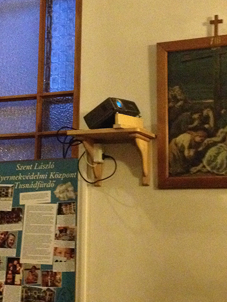
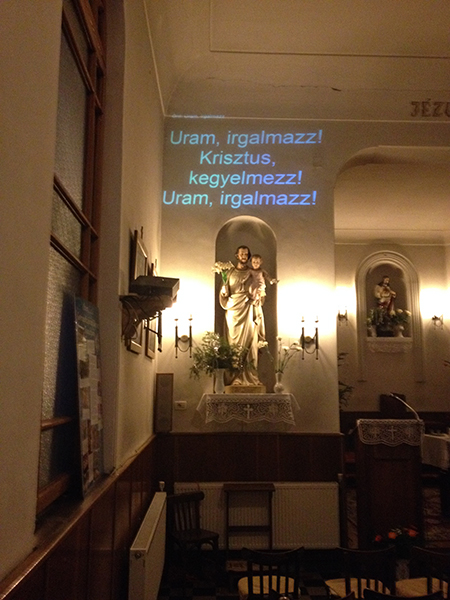

A közel 80 évvel ezelőtt épített templomunk, mely akkor még a város szélén állt, a város terjeszkedése következtében mára már a város újközpontjához tartozik. Tömbházak és főutak veszik körül, melyek mára jelentősen lecsökkentették a templom egykori területét. Jelenleg város egyik negyedének templomaként működik. A terjedelmében jelentősen lecsökkentett egykori kis templom úgy a magyar, mint a román ajkú híveknek imahelyet biztosít. A hívek nagy létszáma miatt a szentmiséket külön-külön mutatják be román és magyar ajkú hívek számára. Alkalmanként bemutatnak kétnyelvű szentmisét is, ekkor a főbb részeket mindekét nyelven megismétlik, az énekek nagy része pedig latinul csendül fel. Bizony ezen alkalmakkor templomunk már-már férőhely nélkűl marad.
Bizonyítván, hogy „kezdetben volt az ige …” bevezetük templomunkban a „kivetített szót”, úgy az imákat, mint az énekeket illetően. Hála a Diatár informatikai programnak, melyet az internetről töltöttem le és hozzáadtam a román nyelvű énekeket is, „az ima és az ének szava” már kivetítve is megjelenik a szentmisék keretén belül úgy román, mint magyar nyelven. Hozzáadtam az angol nyelvű rövid szertartás szövegét is gyűjteményemhez és már csak a német nyelvű szertartás szövege hiányzik, mely a jővő egyik célkítűzése marad, amennyiben ez szükségessé válik. Az informatikai program kibővítése, hiányzó szövegeket pótlása hosszadalmas erőfeszítés volt,2013 februárjáról augusztusig tartott. Most már azomban a szentmisék minden résztvevője számára lehtségessé vált az aktív közreműködés akár válaszok, de főleg énekek formájában, a Római Katolikus ritusnak megfelelően függetlenül attól, hogy mennyire ismerik ezeket, hiszen a latin mondás szerint „bis orat qui cantat” – aki szépen énekel kétszeresen imádkozik így a kivetített szövegek segítségével, mondhatni a kegyelmekhez is könnyebben hozzájuthatunk.
Mint bármely kics költslgvetésű, fiatal lelkészek által szolgált kis templomban, csak nehezen tudtunk a modern vetítést biztosító technológiai eszközökhöz hozzájutni.
Saját erőforrások mozgósításával mégis sikerűlt működöképes vetítési rendszert kialakítanunk.
 A régi, ki nem használt diavetítő tartókonzolját, mely a templom jobb oldalára volt felszerelve, néhány odaadó mesterember segítségével áthelyeztük a baloldalra és ráhelyeztük a plebánia régi, sajnos már elavúlt gyenge fényarajű vetitő gépét.
 Egy román nyelv és irodalom szakos tánártól ajándékba kaptunk egy régebbi számítógépet, melyet felújítottam (upgade-eltem)
annyira amennyire az alaplap lehetővé tette, beüzemeltem az ottoni hangfalaimat, illetve vásároltunk egy új asztalt is a gép számára,
mely befér az orgona mellett levő kis részre.
Egy román nyelv és irodalom szakos tánártól ajándékba kaptunk egy régebbi számítógépet, melyet felújítottam (upgade-eltem)
annyira amennyire az alaplap lehetővé tette, beüzemeltem az ottoni hangfalaimat, illetve vásároltunk egy új asztalt is a gép számára,
mely befér az orgona mellett levő kis részre.
A plebánia mellett működő, ételkihordással és rendezvényszervezéssel foglalkozó jótékonysági szervezet jóvoltából kaptnk egy megfelelő hosszúságú VGA kablet is. Ez köti össze a kórusban, az orgona mellet levő számítógépet a Szent József oltár közelében felszerelt vetítővel.
 A képet Szent József szobra fölé, a falra vetítjük, annélkül, hogy a szobor bármilyen módosításra szükség lett volna, ám a vetitő helyzete miatt a kép kivetítése nem csak alulról felfele, hanem balról jobbra is történik. Mindezen tényezők természetesen befolyásolják a kép minőségét, a szükséges beállítások és a trapéztorzitás korrekciója után is a kép enyhén torz maradt. Ez is oka annak, hogy amikor viszonyalg alacsony fény mellett vetítünk, a vetítés fekete alapon fehér betűkkel történik, mert így nem annyira észrevehető a torzítás. Ha majd a tél végével,a nappalok meghosszabodásávan a belső fényerő erősebbé válik majd gondok adódhatnak majd a szövegek láthatóségéval. Addig is haszáljuk azt ami a rendelkezésünkre áll.
 Felmérjük majd, hogy a jövőben a vetítési rendszer mennyire válik szükségessé, és amennyiben valóban annak bizonyul, találunk majd
olyan megoldást, mely nagyobb teljesítményre is képes lesz.
2013 augusztusától mostanáig teszteltem a Diatár által biztosított informatikai programot, eleinte csak a számítógépen, a kórus
részére, majd később kivetítve a falra is és mondhatom, hogy a rendszer működik, jól kigondolt és nem utolsó sorban egyszerű
működtetni és ellenőrizni is.
Figyelembe kell venni azomban, hogy e rendszer esetén is, mint minden más esetén, az előkészület a legfontosabb, hiszen a siker az az alapos előkészülettől függ.
Felmérjük majd, hogy a jövőben a vetítési rendszer mennyire válik szükségessé, és amennyiben valóban annak bizonyul, találunk majd
olyan megoldást, mely nagyobb teljesítményre is képes lesz.
2013 augusztusától mostanáig teszteltem a Diatár által biztosított informatikai programot, eleinte csak a számítógépen, a kórus
részére, majd később kivetítve a falra is és mondhatom, hogy a rendszer működik, jól kigondolt és nem utolsó sorban egyszerű
működtetni és ellenőrizni is.
Figyelembe kell venni azomban, hogy e rendszer esetén is, mint minden más esetén, az előkészület a legfontosabb, hiszen a siker az az alapos előkészülettől függ.
Az időben, rendesen előkészített munka sikernek és elismerésnek örvend, ellenben a felkészületlenség nem kívánt hibákhoz vezet, melyek rontja a rendszer használhatóségét, és szükségességébeni bizalmat.
2012. Karácsonyán sajnos elhunyt tisztelt Kántorunk, az akivel kezdeményeztem ezen program alkalmazását. 2013. májusa óta új kántorunk van, aki menet közben próbál alkalmazkodni és beleilleszkedni munkakörébe. Ezt figyelembe véve, Ő még nem foglalkozik az énekek kivetítésével, ezt a feladatot még mindig én hajtom végre.
Az eredmények már láthatóak. A hívek egyre inkább próbálnak belakapcsolódni a Szentmisék menetébe, bátrabban énekelnek minden szakaszt és nem csak az első néhányat vagy csak a refrént, mint eddig. A feleletek élőbbek, azonnalibbak, így a közösség összeforrottabb és élőbb, a Szentmise szebb mikor mindenki hozzájárul a válaszok és az énekek révén és így az ima és az ének könnyebbe elér a hívek szívéig, lelkéig.
2014 tavaszi újdonság, hogy a templom bensö meszelésével és az ablakok kicserélésével egyidőben új vetitőt, új vetitövásznat és új vetitö álványt rendeltünk. Mostmár a vetitő a plafonra van felfogva és onnan vetít a falra rögzített vászonra. Az új dolgok jó minőségűek így sokkal jobban látszik a kivetített kép. A kábeleket a padláson vezettük hátra a korusban levő számitogépig. A távirányító szenzort is kábelel a számitogépig vezettük, most már mindent a számitogéptől lehet kezelni. Sajnos a kántornak még nem sikerűlt a rendszer kezelését elsajátítania, így ezt egyelőre valaki másnak kell végeznie. A rendszer pontosan müködik, a program nagyon jól használhtó!


{kind=link}
{kind=link}
{kind=link}
{kind=link}
{kind=link}
{kind=link}
{kind=link}
Ha „kezdetben volt az ige”, ma már „a kivetített szó” révén is köztünk él.
”Dícsértesék a Jézus Krisztus!"
ADI István
2014 Január